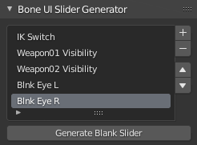
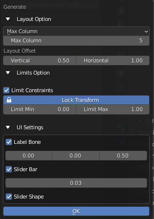
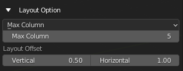
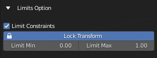
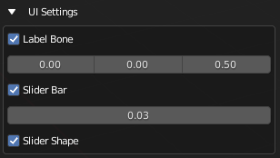

Bone UI Slider Generator
Select Armature Object
Panel
Bone UI Slider Generator is a listbox that list out a list of name that wanted to be use to create a bunch of “Blank Slider Bones”
Generate Blank Slider
Edit Armature |
This Operator Generate Blank Slider (No Driver) Base on the Name in the List
Layout Settings
Layout Settings:
Set the Layout setting to use Max Column or Max Row
Max Column
Max Row
Max Column / Max Row:
Max Column or Row before going to the next Row or Column
Layout Offset:
Offset Distance between the Sliders
Vertical: Vertical Distance
Horizontal: Horizontal Distance
Limit Options
Limit Constraints: Add Limit Constraint to the Driver Bone
Lock Transform: Lock the relevant Transform channel
Limit Min: Set the Minimum limit for the constraints
Limit Max: Set the Maximum limit for the constraints
Map Value to Min Max: Map the Value of the driven property from 0 - 1 to Minimum Limit and Maximum Limit
UI Settings
- Label Bone:
Generate the Label Bone with it’s bone shape text object
Label Offset: Offset Amount of Label Bone From Slider Bone
- Slider Bar:
Generate Slider Bar with Bone Shape
Slider Bar Thickness: Thickness of Slider Bar
Slider Shape: Generate Slider Bone Shape for Driver Bone
Info
Driver Bone, Label Name Bone and Slider Bone will be generated with this. The Label will use the Property Name as Label, You can Edit the Bone Shape Label as a text object